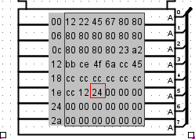
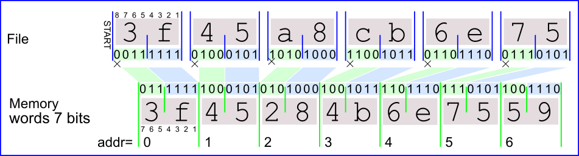

存储器映像文件的格式有意保持简单，便于编写程序（例如汇编器）生成随后可加载的存储器映像。例如，假设有如下存储器：

如果将其中的内容导出为文件，生成的文件如下所示。
v2.0 raw 12 22 45 67 12*80 23 a2 bb ce 4f 6a cc 45 7*cc 12 24
第一行标识所使用的文件格式（目前只识别 “raw” 这一种格式）。后续各值以十六进制列出，并从地址 0 开始写入；同一行可以放置多个值。如果文件中的数据量小于存储器空间，剩余单元不会改变。
映像文件可以使用游程编码；例如，不必连续列出值80十二次，文件可以包含12*80。请注意，重复次数以十进制书写。Logisim 生成的文件会对至少四个值的连续游程使用游程编码。
可以用“#”符号在文件中添加注释。从“#”符号开始直到行末的所有字符都会被 Logisim 忽略。
如果文件中的数据长度小于存储器空间，则剩余单元对 ROM 初始化为 0；对 RAM 则根据项目选项中的参数初始化为 0 或随机值。
如果存储器字的位宽小于文件中数据字的宽度，则超出的高位会被忽略。

下一节：弹出菜单和文件。